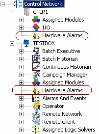

Enabling hardware alarms
Hardware alarms appear as a subsystem under the node in DeltaV Explorer. This subsystem must be enabled for the system to detect the alarm condition and categorize it into one of the four types of hardware alarm: Advisory (ADVISE_ALM), Failed (FAILED_ALM), Maintenance (MAINT_ALM), and Not Communicating (COMM_ALM). The Hardware Alarms subsystem is enabled from the node's Properties dialog by selecting the Enable System Hardware Alarms option. Hardware alarms for I/O cards are enabled with the controller under which they reside. Once hardware alarms are enabled, the hierarchy view displays the Hardware Alarm subsystem.

Configuring the Hardware Alarm's Properties
Once enabled, you can select the Hardware Alarms subsystem and configure the hardware alarm's properties. Access the alarm's Properties dialog by expanding the node, selecting the Hardware Alarms subsystem, and, in the right pane, right-clicking the alarm (ADVISE_ALM, for example). Then, select Properties from the context menu.
Hardware alarms are not supported on remote workstations.
From the Alarm Properties dialog, the following can be configured:
enable/disable the alarm
change the default priority (this changes how operators see the alarm in the alarm banner.
configure the alarm shelving timeout (except on COMM_ALM)
set the functional classification
enable/disable alarm help.
Setting the three alarm shelving timeout fields to zero (0) disables alarm shelving.
Hardware alarm messages
For a list of hardware alarm messages, including descriptions of the specific error conditions that trigger each message, refer to Hardware Alarm Messages.
Downloads, switchovers and hardware alarms
Hardware alarm state is retained through most partial downloads to the node. Condition state is reset on total downloads to the node; thus, after a total download, all hardware conditions become unsuppressed and the active timestamps are re-established (if the conditions are redetected).
There are exceptions to what is retained during a partial download to the node. For example, I/O cards undergoing major changes (number of channels, card type changes and so on) will have the hardware condition reset. Cards not undergoing such changes will have their condition preserved during the partial download.
The alarm's properties settings are downloaded to the node when performing a total download, setup data download, or changed setup data download. The hardware alarm can be enabled/disabled by writing to the alarm's ENAB field (that is, <node>/FAILED_ALM.ENAB). This value cannot be uploaded.
Hardware alarm condition suppression state survives redundant node switchovers; that is, all suppressed conditions do not unsuppress themselves because of a switchover.